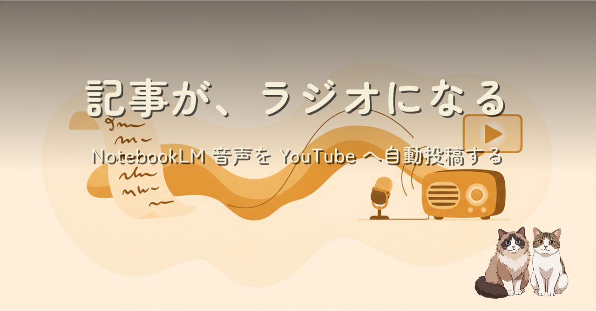

記事を書き終えたら NotebookLM が 17 分のラジオにしてくれた。じゃあ YouTube にも置きたい。でも手作業のアップロードは続かない。音声 m4a とヘッダー画像 1 枚から、ffmpeg の静止画動画化と YouTube Data API v3 でコマンド 2 発の自動投稿にした話です。コードよりもハマったのは OAuth のコンソール設定側で、その 3 つの罠と回避策も書きました。
音声コンテンツの YouTube 展開は「静止画 1 枚の動画化」で成立します。ffmpeg の -loop 1 -tune stillimage -r 1 が核で、映像部分は 19 分でも数 MB。アップロード側は YouTube Data API v3 + OAuth のトークン永続化で 2 回目以降は無人です。ハマりどころはコードではなくコンソール設定に集中していて、シークレットの 1 回限り表示・テストユーザー登録・テストステータスのトークン 7 日失効の 3 つを先に潰すのが近道でした。
この記事を NotebookLM でラジオ風に音声化したものです。この動画自体が、記事で説明しているパイプラインで投稿されています。